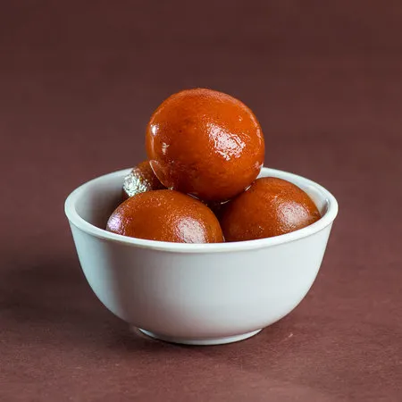
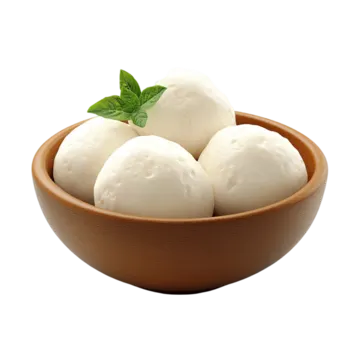
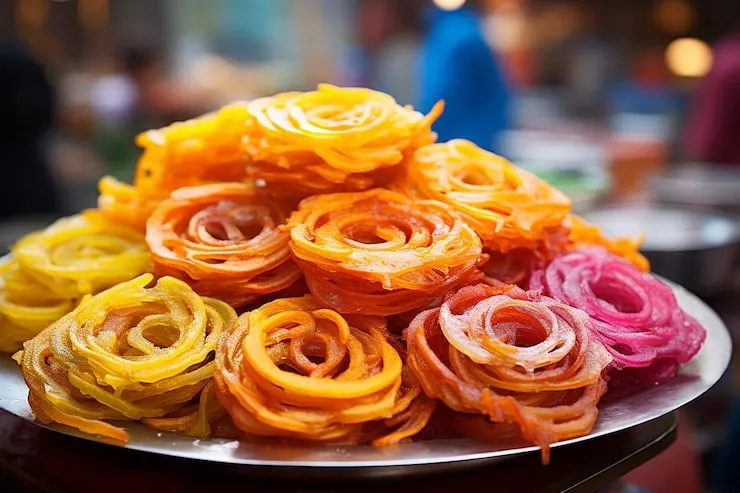
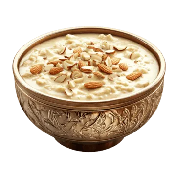
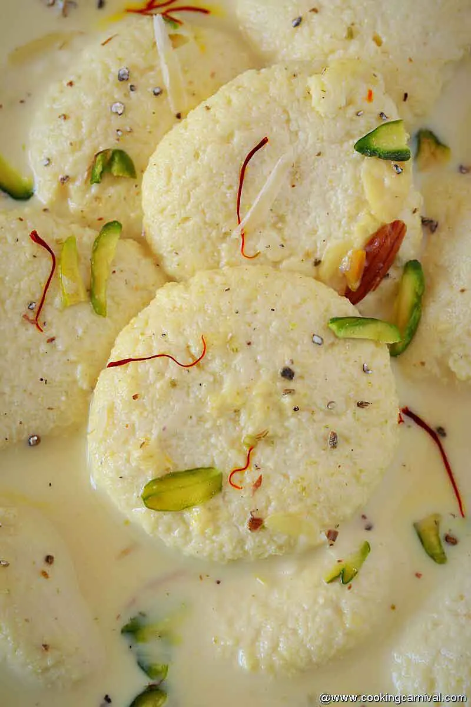
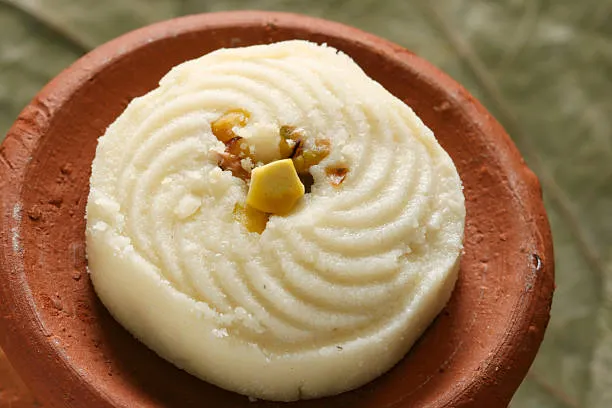
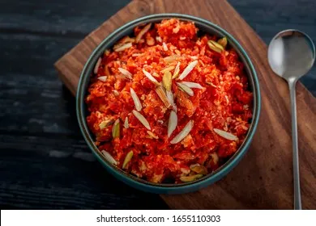
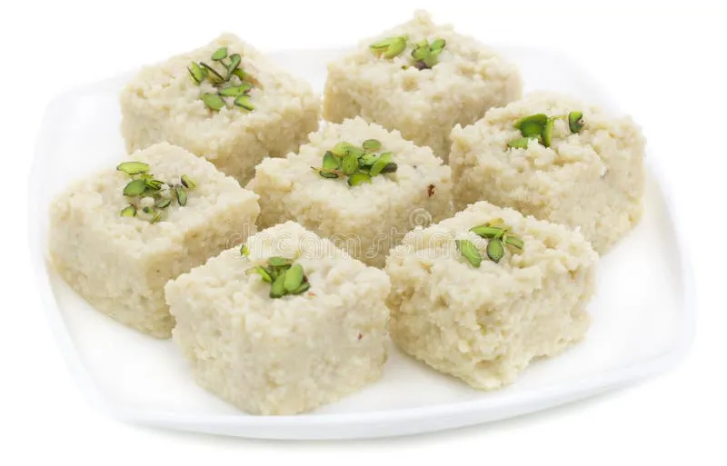

Newsletters
Sweepstakes
Contact Us

Delicious Gulab Jamun
- Prepare the Dough - Mix khoya, flour, and baking soda to make a soft dough.
- Shape the Balls - Roll the dough into small, smooth, crack-free balls.
- Prepare Sugar Syrup - Boil sugar and water with cardamom to make a light syrup.
- Fry the Gulab Jamun - Deep-fry the balls on low heat until golden brown.
- Soak and Serve - Soak the fried balls in warm sugar syrup and serve.

Delicious Roshogulla
- Prepare Chhena - Make soft chhena from fresh milk and knead it until smooth.
- Shape the Balls - Roll the chhena into small, crack-free balls.
- Prepare Sugar Syrup - Boil sugar and water to make a light syrup.
- Cook the Roshogulla - Add the balls to the boiling syrup and cook until they
expand.
- Serve - Let them cool and soak in the syrup before serving.

Crispy Jalebi
- Prepare the Batter - Mix flour, yogurt, and water to make a smooth batter.
- Rest the Batter - Allow the batter to ferment for several hours.
- Prepare Syrup - Boil sugar and water with saffron and cardamom.
- Shape and Fry - Pipe the batter into spiral shapes and fry until crisp.
- Soak and Serve - Dip the hot jalebi in sugar syrup and serve.

Creamy Rice Kheer
- Boil the Milk - Bring full-fat milk to a gentle boil.
- Add Rice - Add washed rice and cook until completely soft.
- Add Sugar - Mix in sugar and cook until the kheer thickens.
- Add Flavours - Add cardamom, saffron, and chopped nuts.
- Serve - Serve warm or chilled according to preference.

Soft Rasmalai
- Prepare Chhena - Make fresh chhena and knead it until smooth.
- Shape the Discs - Flatten the chhena into small round discs.
- Cook in Syrup - Boil the discs in light sugar syrup until they expand.
- Prepare Rabri - Simmer milk with sugar, saffron, and cardamom.
- Combine and Serve - Soak the discs in rabri and garnish with nuts.

Bengali Sandesh
- Prepare Chhena - Make fresh chhena and remove excess moisture.
- Mix Ingredients - Combine chhena with powdered sugar.
- Cook the Mixture - Cook gently until the mixture becomes smooth.
- Shape the Sandesh - Press the mixture into small moulds or shapes.
- Garnish and Serve - Decorate with nuts and serve chilled.

Gajar Ka Halwa
- Grate the Carrots - Wash, peel, and grate fresh carrots.
- Cook the Carrots - Cook them with milk until they become soft.
- Add Sugar - Mix in sugar and cook until most of the liquid evaporates.
- Add Khoya - Stir in khoya and cook until the halwa becomes rich and thick.
- Garnish and Serve - Add nuts and serve warm.

Milk Kalakand
- Prepare the Milk - Heat milk in a heavy-bottomed pan.
- Add Paneer - Crumble fresh paneer and add it to the milk.
- Add Sugar - Mix in sugar and cook until the mixture thickens.
- Set the Mixture - Transfer the mixture to a greased tray and flatten it.
- Garnish and Serve - Top with chopped nuts, cool, and cut into pieces.